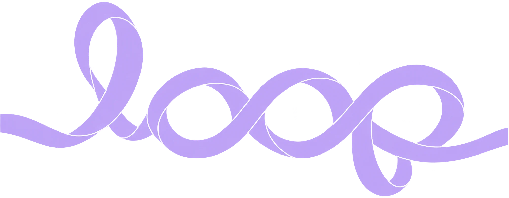

Workplace Aspiration
 ‘s New workplace shall be shaped by calm, clarity and connection, where timeless materials, authentic nature, and thoughtful planning foster trust, safety and belonging.
‘s New workplace shall be shaped by calm, clarity and connection, where timeless materials, authentic nature, and thoughtful planning foster trust, safety and belonging.
Now let’s bring these cues for the place in to the built environment…
Workplace Aspiration
‘s New workplace shall be shaped by calm, clarity and connection, where timeless materials, authentic nature, and thoughtful planning foster trust, safety and belonging.
Now let’s bring these cues for the place in to the built environment…
Workplace Aspiration
‘s New workplace shall be shaped by calm, clarity and connection, where timeless materials, authentic nature, and thoughtful planning foster trust, safety and belonging.
Now let’s bring these cues for the place in to the built environment…
ACKO is India's first fully digital insurance company, redefining insurance by making it simple, transparent, technology-driven, and customer-centric. Unlike traditional insurers built around paperwork and intermediaries, ACKO leverages data, AI, and digital experiences to deliver seamless insurance products with minimal friction.

A Möbius strip.
One surface, no edge, no end. Keep it in mind: the whole campus is drawn from it.
ACKO is India's first fully digital insurance company, redefining insurance by making it simple, transparent, technology-driven, and customer-centric. Unlike traditional insurers built around paperwork and intermediaries, ACKO leverages data, AI, and digital experiences to deliver seamless insurance products with minimal friction.
A Möbius strip.
One surface. No end.
ACKO is India's first fully digital insurance company, redefining insurance by making it simple, transparent, technology-driven, and customer-centric. Unlike traditional insurers built around paperwork and intermediaries, ACKO leverages data, AI, and digital experiences to deliver seamless insurance products with minimal friction.
A Möbius strip.
One surface with no end, like a courtyard you can walk round and round. The whole campus is drawn from it.
What if we tap into the familiarity of Safety & Protection into the workplace?
Nalanda. Takshashila. India’s great institutions were campuses, not buildings: learning along pathways, courtyards and steps.
A Modern Indian Institution is a campus.
What if we tap into the familiarity of Safety & Protection into the workplace?
Nalanda. Takshashila. Campuses, not buildings.
A Modern Indian Institution is a campus.
What if we tap into the familiarity of Safety & Protection into the workplace?
Nalanda, Takshashila, the chaupal: India learnt and met in the aangan, along shaded paths and on steps, never in one closed hall.
A Modern Indian Institution is a campus of courtyards.

So, let’s embrace what’s next.
ACKO’s mark, the Möbius strip: one continuous surface, one continuous journey where every connection leads to another.
Bold. Fresh. Fearless.
So, let’s embrace what’s next.
The Möbius: one surface, one journey, no end.
Bold. Fresh. Fearless.
So, let’s embrace what’s next.
ACKO’s Möbius: one continuous surface, like a parikrama path that always brings you back. Every connection leads to another.
Bold. Fresh. Fearless.A Modern Indian Institution
A campus, not a building: pathways, courtyards and steps where people meet.
The Möbius, ACKO’s mark
One continuous surface: no inside, no outside, no end.

= The Loop
A campus of pathways and courtyards, drawn as one continuous surface. No dead ends: every path leads to another.
A Modern Indian Institution
Pathways. Courtyards. Steps.
The Möbius, ACKO’s mark
One surface. No end.
= The Loop
No dead ends. Every path leads to another.
A Modern Indian Institution
The aangan, the shaded path, the steps: a campus where people meet.
The Möbius, ACKO’s mark
One continuous surface: no inside, no outside, no end.
= The Loop
The aangan and its paths, drawn as one continuous surface. No dead ends: every path leads to another.
The materials of an Indian campus, made contemporary: terracotta and stone from its courtyards, light wood, charcoal accents and lush greenery, for a grounded, earthy and timeless workplace.
The materials of an Indian campus, made contemporary: terracotta, stone, wood and green.
Sun-warmed terracotta, courtyard stone, light timber and deep shade-green: an Indian campus, made contemporary, for a grounded and timeless workplace.